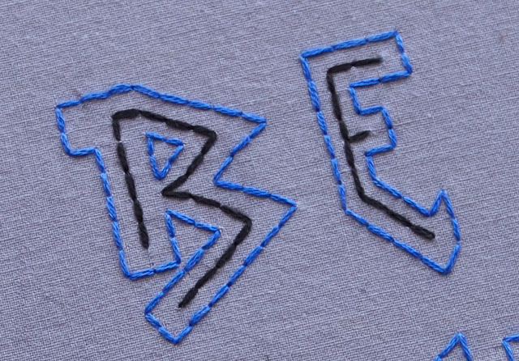
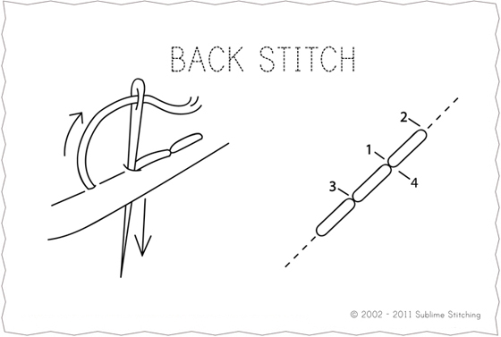

The Basic Back-Stitch

Photo by OhCraftyOne
The backstitch is, ironically, the most straightforward stitch you can learn. It's great for corners, and is overall a pretty versatile option.

Photo by Sublime Stitching
- Make a single, straight stitch (1-2) as long or short as you want.
- Continue along your pattern line, but come up a space ahead (3) and bring your needle back down into the same hole at the end of the last stitch you made. Keep going to make a line.
- That's it!